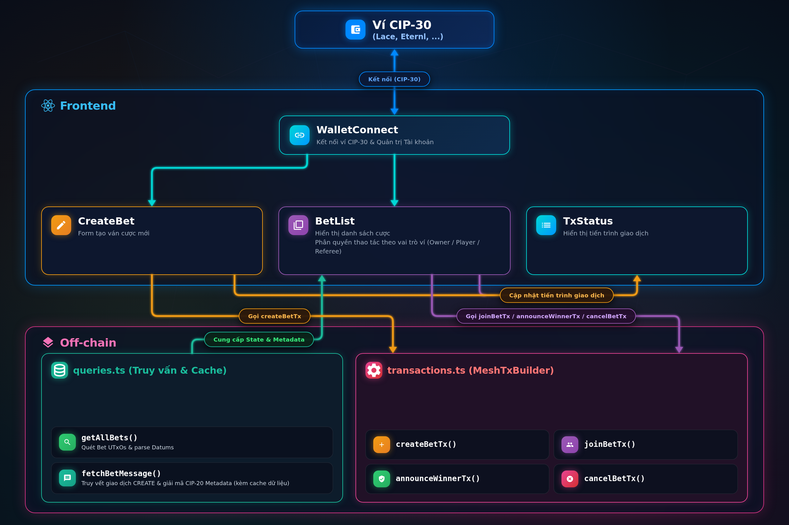
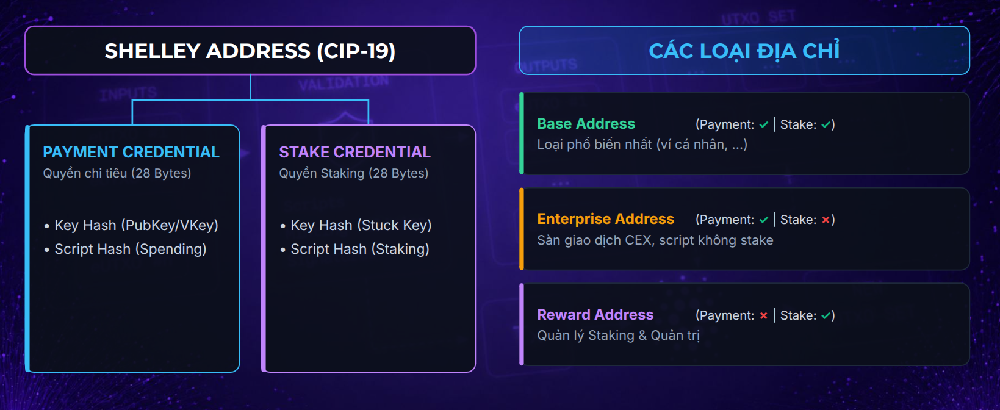
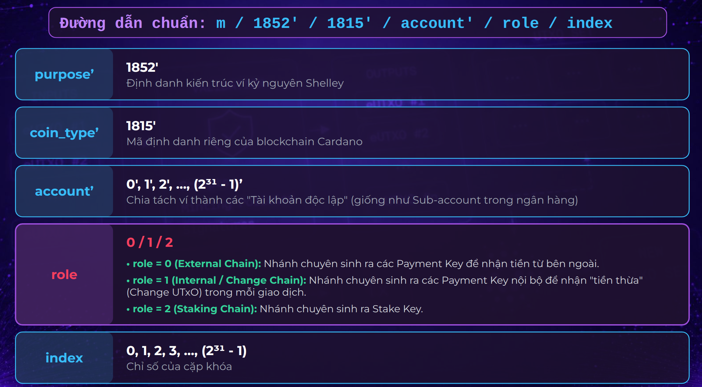

Mục lục bài học
Ở Bài 2, chúng ta đã hoàn thành việc xây dựng Smart Contract Multi-Purpose Validator bằng Aiken. Trong bài học này, chúng ta sẽ làm chủ tầng Frontend (Next.js) và Off-chain SDK (MeshJS) để tích hợp hoàn chỉnh hệ thống dApp.

Lớp giao diện được tổ chức theo kiến trúc module hóa với 4 component cốt lõi:
WalletBar (Quản trị Kết nối Ví CIP-30): Quản lý kết nối hai chiều với các tiện ích ví Web3 (Lace, Eternl...), giám sát thay đổi tài khoản, mạng lưới (Preprod) và cung cấp đối tượng BrowserWallet cho toàn bộ ứng dụng.CreateBet (Khởi tạo Ván cược): Biểu mẫu thu thập thông tin tạo bet gồm nội dung câu hỏi, mức cược, thời hạn kết thúc và địa chỉ ví Trọng tài. Tích hợp bộ kiểm tra dữ liệu đầu vào (Validation Engine) và bộ đếm ký tự UTF-8 theo chuẩn CIP-20.BetList (Danh sách ván cược & Điều phối Hành động): Nhận dữ liệu ván cược và nội dung câu hỏi đã giải mã từ queries.ts để hiển thị trực quan. Tự động nhận diện vai trò của ví đang kết nối (Owner / Player / Referee) để mở khóa các nút thao tác tương ứng (Join Bet, Announce Winner, Cancel Bet), đồng thời quản lý khôi phục tiến trình khi người dùng tải lại trang.TxStatus (Lớp phủ Trạng thái Giao dịch & Quản lý Khóa Toàn cục): Lớp phủ giao diện (modal overlay) phản hồi trực quan 8 trạng thái xuyên suốt vòng đời giao dịch (idle → building → signing → submitting → confirming → success / submitted / failed). Kích hoạt cơ chế khóa 2 lớp (isLocked = isProcessing || isTxBusy) để vô hiệu hóa toàn bộ nút bấm, loại trừ triệt để nguy cơ người dùng click đúp hoặc xung đột UTxO.Lớp Off-chain đóng vai trò cầu nối logic giữa giao diện người dùng và hợp đồng thông minh on-chain, thực hiện 2 nhóm nhiệm vụ chính:
queries.ts (Truy vấn Dữ liệu & Bộ nhớ đệm):
getAllBets(): Quét toàn bộ Bet UTxOs tại script address và giải mã Datums on-chain cung cấp danh sách ván cược cho BetList.fetchBetMessage(): Truy vết ngược về giao dịch CREATE ban đầu để giải mã nội dung cược theo chuẩn CIP-20 Metadata, tích hợp bộ nhớ đệm Cache 2 tầng (RAM + LocalStorage) loại bỏ hoàn toàn nguy cơ vượt hạn mức Rate Limit của Blockfrost.transactions.ts (Xây dựng & Điều phối Giao dịch MeshTxBuilder):
createBetTx(): Khởi tạo ván cược, đúc 1 Bet Thread Token và khóa tiền cọc kèm CIP-20 metadata vào Script.joinBetTx(): Người chơi nạp tiền đối ứng, cập nhật địa chỉ Player vào Datum với Expiration slot bảo vệ.announceWinnerTx(): Trọng tài công bố người thắng, giải phóng toàn bộ pot về ví Winner theo mô hình 0 phí và ấn định Execution Units tĩnh (+30% Buffer).cancelBetTx(): Chủ phòng rút lại tiền cọc và đốt Bet Thread Token khi bet hết hạn mà không có người tham gia.Bốn luồng tương tác chính diễn ra xuyên suốt vòng đời ứng dụng:
TxStatus kích hoạt đếm lùi, vô hiệu hóa nút bấm và tự động cập nhật lại danh sách cược khi giao dịch lên chuỗi thành công.Để tối ưu kích thước UTxO on-chain, nội dung văn bản mô tả ván cược không được lưu trong Datum mà được đính kèm dưới dạng Transaction Metadata theo chuẩn CIP-20.
Khung cấu trúc JSON Metadata theo đặc tả CIP-20 (nhãn 674):
{
"674": {
"msg": [
"Trận Chung kết Cúp C1 Châu Âu 2026:",
"Đội A sẽ thắng Đội B trong 90 phút thi đấu chính thức."
]
}
}Bẫy kích thước byte chuỗi UTF-8: Cardano Metadata quy định mỗi phần tử chuỗi trong mảng
msgcó độ dài tối đa là 64 bytes. Trong tiếng Việt có dấu, một ký tự có thể chiếm từ 2 đến 3 bytes. Nếu dùng hàmsubstring(0, 64)theo số lượng ký tự thì chuỗi có thể vượt quá 64 bytes và giao dịch sẽ bị Cardano Node từ chối ngay lập tức!
Thuật toán cắt chuỗi an toàn theo dung lượng byte thực tế (formatCip20Message):
// Trích từ offchain/src/transactions.ts:
export const formatCip20Message = (message: string): string[] => {
if (!message) return [];
const encoder = new TextEncoder();
const chunks: string[] = [];
let currentChunk = "";
let currentBytes = 0;
for (const char of message) {
const charBytes = encoder.encode(char).length;
if (currentBytes + charBytes > 64) {
if (currentChunk) {
chunks.push(currentChunk);
}
currentChunk = char;
currentBytes = charBytes;
} else {
currentChunk += char;
currentBytes += charBytes;
}
}
if (currentChunk) {
chunks.push(currentChunk);
}
return chunks;
};Xây dựng giao dịch tạo cược với createBetTx:
// Trích từ offchain/src/transactions.ts:
txBuilder
// 1. Đúc đúng 1 Bet Thread Token
.mintPlutusScriptV3()
.mint("1", policyId, BET_TOKEN_NAME)
.mintRedeemerValue(mConStr0([]))
.mintScript(SCRIPT_CBOR)
// 2. Khóa tiền cọc + Bet Token vào Script Address
.txOut(SCRIPT_ADDRESS, [
{ unit: "lovelace", quantity: betAmountLovelace.toString() },
{ unit: `${policyId}${stringToHex(BET_TOKEN_NAME)}`, quantity: "1" }
])
.txOutInlineDatumValue(datum)
// 3. Đính kèm mô tả CIP-20 Metadata nhãn 674
.metadataValue("674", { msg: formatCip20Message(betMessage) })
.invalidHereafter(expirationSlot)
.changeAddress(ownerAddress)
.selectUtxosFrom(utxos)
.complete();Một địa chỉ ví Cardano tiêu chuẩn (Base Address) là sự lắp ráp có cấu trúc từ 2 thành phần định danh (Credentials):

| Tiêu chí | Base Address (Địa chỉ Cơ sở) | Enterprise Address (Doanh nghiệp) | Reward Address (Trả thưởng) |
|---|---|---|---|
| Cấu trúc lắp ghép | [Header] + [Payment] + [Stake] |
[Header] + [Payment] (Không Stake) |
[Header] + [Stake] (Không Payment) |
| Độ dài Payload | 57 bytes (1 Header + 28 Payment + 28 Stake) | 29 bytes (1 Header + 28 Payment) | 29 bytes (1 Header + 28 Stake) |
| Tiền tố Bech32 | addr1q... (Mainnet) / addr_test1q... |
addr1v... (Mainnet) / addr_test1v... |
stake1u... (Mainnet) / stake_test1u... |
| Tham gia Staking? | Có. Tự động cộng dồn số dư ADA vào Stake Key. | Không. Hoàn toàn không tham gia Staking. | Nơi tích lũy phần thưởng staking nhận về từ pool. |
| Ứng dụng thực tế | Ví người dùng cá nhân (Lace, Eternl), dApp DeFi. | Sàn CEX (Binance, Coinbase), địa chỉ script no-stake. | Ủy quyền Stake Pool và rút phần thưởng staking. |
bet.ak)Đối với Spending Script trên Cardano, một Script Hash có thể đứng hoàn toàn độc lập ở dạng Script Enterprise Address (không có thành phần Stake) hoặc được ghép với bất kỳ Stake Credential nào để tạo ra vô số Script Base Address khác nhau. Nguyên tắc cốt lõi: dù UTxO nằm tại Enterprise Address hay bất kỳ Base Address nào của script, khi UTxO đó được chi tiêu, Node Cardano vẫn luôn kích hoạt cùng một Spending Validator tương ứng với Script Hash để kiểm định logic.
Trong Mint handler của bet.ak:
expect [bet_output] = outputs_at(outputs, from_script(policy_id))from_script(policy_id) của thư viện cardano/address mặc định sinh ra Script Enterprise Address (stake_credential: None). Do đó, lệnh expect [bet_output] = outputs_at(...) chỉ lọc và bắt buộc có đúng 1 output gửi về chính xác địa chỉ Enterprise thuần túy này.getAllBets) tự động loại bỏ hoàn toàn.Từ duy nhất một hạt giống gốc (12 - 24 từ khóa Mnemonic - BIP-39), thuật toán Ed25519-BIP32 phái sinh cây phân cấp khóa theo đường dẫn 5 tầng: m / 1852' / 1815' / account' / role / index.

Ở nhánh role = 0 (nhận tiền) và role = 1 (tiền thừa - change), ví ở chế độ multi-address sẽ liên tục tăng chỉ số index để sinh ra vô số Payment Key khác nhau. Ở nhánh role = 2 (Staking), ví thường chỉ lấy duy nhất khóa đầu tiên (role = 2 / index = 0) làm Stake Key đại diện cho cả tài khoản. Dù đổi bao nhiêu địa chỉ nhận tiền, toàn bộ số dư ADA nằm trên các địa chỉ đó đều được quy tụ về đúng một Stake Key duy nhất!
| Chế độ | Single Address Mode: BẬT | Single Address Mode: TẮT (Chế độ mặc định) |
|---|---|---|
| Mục đích | Mô phỏng ví đơn địa chỉ kiểu Account-based tiện dùng dApp. | Tối ưu hóa tính riêng tư theo mô hình eUTxO nguyên bản. |
| Hành vi sinh địa chỉ | Cố định duy nhất 1 địa chỉ nhận tiền và change. | Liên tục sinh địa chỉ nhận tiền và địa chỉ nhận tiền thừa (Change) mới sau mỗi giao dịch. |
| Input & Output Giao dịch | Cả UTxO đầu vào và UTxO tiền thừa đầu ra đều quay về cùng một địa chỉ này. | UTxO đầu vào từ Change cũ, UTxO tiền thừa trả về Change mới. |
| Đường dẫn Dẫn xuất | PayKey và StakeKey cố định ở index = 0. |
PayKey biến thiên liên tục qua các index; StakeKey luôn cố định ở role = 2, index = 0. |
Lưu ý: DApp cần hỗ trợ tốt cả 2 chế độ này của ví để đảm bảo trải nghiệm người dùng liền mạch.
BetList.tsx)Nếu đem chuỗi địa chỉ ví đang kết nối so sánh trực tiếp với địa chỉ lưu trong Datum (currentAddress === datum.ownerAddress), giao diện sẽ bị lỗi phân quyền khi ví tự đổi Change Address. Giải pháp chuẩn mực là so khớp mã băm Stake Key (stakeCredentialHash):
Lấy danh sách mã băm Stake Key của tài khoản kết nối:
// Trích từ frontend/src/components/BetList.tsx:
const [myStakeKeyHashes, setMyStakeKeyHashes] = useState<string[]>([]);
useEffect(() => {
if (!connected || !wallet) {
setMyStakeKeyHashes([]);
return;
}
let isMounted = true;
const fetchStakeKey = async () => {
try {
const rewardAddrs = await wallet.getRewardAddresses();
if (rewardAddrs && rewardAddrs.length > 0) {
const hashes = rewardAddrs
.map((addr) => resolveStakeKeyHash(addr))
.filter(Boolean) as string[];
if (isMounted && hashes.length > 0) {
setMyStakeKeyHashes(hashes);
}
}
} catch (err) {
console.error("Lỗi lấy reward address từ ví:", err);
}
};
fetchStakeKey();
return () => { isMounted = false; };
}, [connected, wallet]);Đối chiếu phân quyền an toàn hỗ trợ cả ví ủy quyền đa pool:
// 1. Trích xuất Stake Key Hash từ các địa chỉ trong Datum
let ownerStake = null, playerStake = null, refereeStake = null;
try { ownerStake = deserializeAddress(b.datum.ownerAddress).stakeCredentialHash; } catch {}
try { if (b.datum.playerAddress) playerStake = deserializeAddress(b.datum.playerAddress).stakeCredentialHash; } catch {}
try { refereeStake = deserializeAddress(b.datum.refereeAddress).stakeCredentialHash; } catch {}
// 2. Đối chiếu với mảng myStakeKeyHashes
const isOwner = Boolean(ownerStake && myStakeKeyHashes.includes(ownerStake));
const isPlayer = Boolean(playerStake && myStakeKeyHashes.includes(playerStake));
const isReferee = Boolean(refereeStake && myStakeKeyHashes.includes(refereeStake));Giao dịch announceWinnerTx đặc biệt ở chỗ: thiết lập .changeAddress(winnerAddress) và không nạp UTxO từ ví cá nhân của Trọng tài (không gọi selectUtxosFrom). Toàn bộ phí mạng lưới được khấu trừ trực tiếp từ quỹ cược (Script UTxO), và số tiền còn lại tự động dồn về ví người chiến thắng:
// Trích từ offchain/src/transactions.ts:
txBuilder
.spendingPlutusScriptV3()
.txIn(betUtxo.input.txHash, betUtxo.input.outputIndex, betUtxo.output.amount, SCRIPT_ADDRESS)
.txInInlineDatumPresent()
.txInRedeemerValue(spendRedeemer, "Mesh", BET_SPEND_ANNOUNCE_BUDGET)
.txInScript(SCRIPT_CBOR)
.mintPlutusScriptV3()
.mint("-1", policyId, BET_TOKEN_NAME)
.mintScript(SCRIPT_CBOR)
.mintRedeemerValue(mConStr0([]), "Mesh", BET_BURN_BUDGET)
.changeAddress(winnerAddress)
.requiredSignerHash(refereePkh)
.invalidBefore(expirationSlot + 1)
.complete();EvaluationFailure của MeshTxBuilder & Cách khắc phụcNguyên nhân kỹ thuật:
.txOut() và nạp UTxO từ ví để thuật toán Coin Selection cân đối phí mạng. Đối với giao dịch này, ta không khai báo bất kỳ .txOut() nào mà dồn toàn bộ số tiền còn lại của quỹ cược sau khi trừ phí vào changeAddress.complete(), MeshTxBuilder phải dựng một Giao dịch Nháp (Draft Transaction) gửi lên Cardano Ogmios nhằm ước tính ngân sách thực thi.MeshTxBuilder gặp lỗi khi mô phỏng giao dịch dẫn đến Ogmios không ước tính được ngân sách thực thi và ném ra lỗi EvaluationFailure.Giải pháp: Kỹ thuật Ấn định Ngân sách Tĩnh (Static Budgeting):
announce và burn qua aiken check, lấy ra con số tài nguyên tiêu tốn lớn nhất (Spend: ~200.000 mem, ~90.000.000 steps; Burn: ~37.000 mem, ~15.000.000 steps).export const BET_SPEND_ANNOUNCE_BUDGET = { mem: 260000, steps: 115000000 };
export const BET_SPEND_CANCEL_BUDGET = { mem: 260000, steps: 115000000 };
export const BET_BURN_BUDGET = { mem: 50000, steps: 20000000 };useEvaluator = false khi khởi tạo MeshTxBuilder để vô hiệu hóa bước mô phỏng tự động, đóng gói thẳng giao dịch với phí mạng được tính toán dựa trên budget ấn định.Bài học Thiết kế Động lực Kinh tế (Incentive Design): Giao thức Cardano chỉ ràng buộc
txfee >= minfee(chấp nhận trả thừa phí). Trong giao dịch announce, Trọng tài có thể tác động đến mức phí của giao dịch công bố kết quả (bằng cách phóng đại budget hoặc chèn thêm các hành động cá nhân không ảnh hưởng đến số output của giao dịch như rút thưởng stake, burn token), trong khi người chiến thắng lại là bên phải gánh chịu khoản phí này (tiền thưởng nhận về bị ít đi).Bài học rút ra khi thiết kế hệ thống: Không bao giờ để một bên quyết định một vấn đề mà bên gánh chịu hậu quả lại là một bên khác. Trong các dự án dApp thực tế ngoài đời, nếu Trọng tài được nhận thù lao hoa hồng, thì chính Trọng tài nên là người tự trả phí mạng từ ví cá nhân của mình để loại bỏ hoàn toàn điểm mâu thuẫn kinh tế trên.
Nếu ván cược hết hạn mà vẫn chưa có người chơi tham gia (EXPIRED), Chủ phòng (Owner) có quyền hủy cược và nhận lại toàn bộ tiền cọc qua cancelBetTx với 4 điểm khác biệt then chốt so với Announce:
ownerPkh).invalidBefore(expirationSlot + 1)).mConStr2([])) tương ứng với Action::CANCEL..changeAddress(ownerAddress).Để giải mã nội dung câu hỏi cược, ứng dụng cần gọi Blockfrost API để truy ngược về giao dịch tạo bet ban đầu. Nếu mỗi lần render danh sách bet đều gửi request lên Blockfrost, ứng dụng sẽ lập tức chạm ngưỡng giới hạn (Rate Limit - 500 requests/ngày trên gói miễn phí) và khiến trang web bị tê liệt.
Giải pháp: Xây dựng cơ chế bộ nhớ đệm Cache 2 tầng (RAM Cache + LocalStorage Cache) trong fetchBetMessage:
// Trích từ offchain/src/queries.ts:
const memoryCache = new Map<string, string>();
export const fetchBetMessage = async (
provider: BlockfrostProvider,
txHash: string
): Promise<string> => {
// Tầng 1: Kiểm tra RAM cache
if (memoryCache.has(txHash)) {
return memoryCache.get(txHash)!;
}
// Tầng 2: Kiểm tra LocalStorage cache
if (typeof window !== "undefined") {
const local = localStorage.getItem(`bet_msg_${txHash}`);
if (local) {
memoryCache.set(txHash, local);
return local;
}
}
// Tầng 3: Truy vấn API Blockfrost nếu chưa cache
try {
const metadata = await provider.get(`/txs/${txHash}/metadata`);
const cip20 = metadata.find((m: any) => m.label === "674");
if (cip20?.json_metadata?.msg) {
const msgArr = cip20.json_metadata.msg;
const fullMsg = Array.isArray(msgArr) ? msgArr.join("") : String(msgArr);
memoryCache.set(txHash, fullMsg);
if (typeof window !== "undefined") {
localStorage.setItem(`bet_msg_${txHash}`, fullMsg);
}
return fullMsg;
}
} catch (err) {
console.error("Lỗi khi fetch CIP-20 metadata:", err);
}
return "Không có nội dung cược";
};Trong Bài tập thực hành của Bài 2, chúng ta đã thực hiện chức năng này ở tầng on-chain. Trong bài tập này, hãy hoàn thiện toàn bộ tính năng ở tầng off-chain và thiết kế giao diện người dùng tương ứng cho phép Chủ phòng tích chọn nhiều ván cược quá hạn để hủy chỉ trong một giao dịch duy nhất.
Xây dựng thanh công cụ lọc gồm 4 tab trong component BetList:
Nhằm hỗ trợ quá trình nghiên cứu sâu hơn về các chuẩn mực kỹ thuật (CIPs/BIPs), cơ chế vận hành giao thức Cardano, kỹ năng đo lường hiệu năng hợp đồng và các công cụ đánh giá giao dịch ngoài chuỗi (Evaluator/Ogmios), dưới đây là danh mục các tài liệu chính thức tốt nhất được chọn lọc cho Bài 3:
Trải qua 3 bài học toàn diện:
Chúc mừng bạn đã hoàn thành xuất sắc module dApp Betting trên nền tảng Cardano!